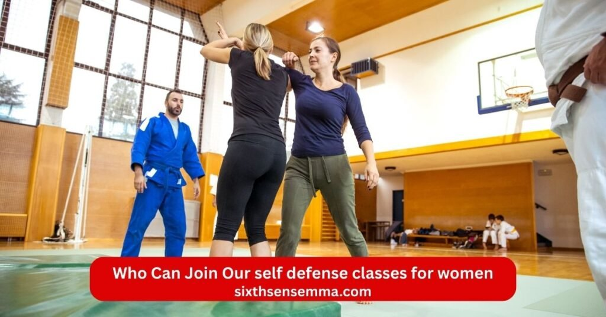

Self Defense Classes for Women Build Confidence & Stay Safe
Self defense classes for women offer a powerful way to build real strength confidence and safety in today’s world. At Sixth Sense MMA in Coppell Texas we created these classes especially for women who want practical tools to protect themselves and feel more secure every day. Whether you face risks from a stranger an acquaintance or just want to stop feeling vulnerable our women only training helps you learn self defense that actually works.
Why self defense classes for women Are Essential Today
Many women face real risks every day from stranger or acquaintance. Studies show one in three women may experience physical violence sexual violence or stalking over their lifetime. Assault rape and sexual assault occur too often with attackers targeting women in various ways. Prevention matters because threat can come suddenly from someone known or unknown. Women need tools to spot danger early through situational awareness and use avoidance to stay out of bad spots. When risks rise self defense classes for women help women prepare to confront aggression and recognize indicator of common attacks by an assailant. Training reduces chances of harm and builds habits that keep women safer in daily life.
Modern Safety Challenges for Women
The world presents ongoing safety challenges for women with higher chances of assault from people they know or meet. Statistics point to one in five women facing rape at some point and many cases involve acquaintance rather than just stranger. Women deal with threat in public spaces workplaces or even homes. Sexual assault remains common and prevention requires more than hope. Women learn to identify warning signs set clear limits and respond if needed. Self defense gives practical ways to handle these situations so women move through life with greater security and less constant worry.
Psychological and Physical Benefits of Self Defense Training
Self defense training delivers strong psychological and physical gains. It develops self defense skills and sharpens physical self defense abilities while adding regular physical activity to routines. Women gain empowerment that boosts empowerment in everyday choices. Good personal safety practices help women stay safe and extend self protection to loved ones. Training often turns participants into more resilient survivor types who handle stress better. Confidence grows from knowing how to act under pressure and many report feeling stronger mentally with reduced fear and higher self worth after consistent practice.
What Makes Our self defense classes for women Unique
Our approach stands out by combining expert guidance safe spaces and realistic practice tailored for women.
Certified Instructors with Real World Experience
Instructors and instructors are trained hold black belt levels and bring real world knowledge to every session. They teach how to manage adrenaline rush during intense moments and guide women to think and move like a capable fighter. Experience from actual scenarios makes lessons practical and trustworthy so women trust the methods when it counts.
Women Only Safe and Supportive Training Environment
Classes stay women only to create a space where women’s participants feel comfortable without pressure. No co ed setting means no added worry about judgment or discomfort. This removes any feeling of weakness and lets everyone focus fully on learning and growing together in a supportive group.
Practical Scenario Based Self Defense Techniques
We emphasize scenario driven practice with self defense techniques that mirror real situations. Hands on drill let women defend against an attacker during an attack and practice ways to de escalate verbal pressure or establish boundary setting. Sessions personalize to fit each woman’s needs. The program is structured around teaching simple effective moves. We introduce dedicated training time in our defense program that covers jiu jitsu class bjj krav maga and other martial art styles. Everything happens inside the gym for focused work.
What You Will Learn in Our self defense classes for women
In our self defense classes for women women gain clear useful skills that apply directly to real situations. Every part of the training focuses on simple effective methods so participants build real ability step by step. The classes cover everything from spotting danger early to handling physical contact if it happens. Women leave sessions knowing more about personal safety and feeling ready to protect themselves.
Situational Awareness and Threat Prevention
The first skill we teach is situational awareness. Women learn to notice indicator of possible threat before anything starts. This includes watching body language reading surroundings and trusting gut feelings when something feels off. Threat prevention becomes natural through practice. We show how to use avoidance by choosing safer paths staying in well lit areas and keeping distance from suspicious people. Many women discover they can stop most problems just by staying alert and making smart choices early. Prevention saves energy and keeps encounters from turning into attack. This foundation makes every other skill stronger because the best defense often means never needing to fight.
Escape Techniques from Common Attacks
We focus heavily on escape techniques because getting away safely matters most. Women practice ways to break free from grabs holds and chokes that happen in common attacks. Training includes wrist escapes bear hug releases and methods to slip out when someone tries to pull or push. Every move targets weak points on an assailant so even smaller women can create space quickly. We drill these actions repeatedly until they feel automatic even under stress. The goal stays simple get free then run to safety. Women learn that escape beats trying to win a long fight against someone stronger. These techniques give real options when seconds count.
Basic Striking and Defensive Movements
Basic striking teaches women how to use open hands fists elbows and knees with power and accuracy. We cover palm strikes to the nose eye gouges to create distance and knee strikes to the body when close. Defensive movements include blocking slapping away arms and using angles to stay out of direct line of attack. Women practice combining strikes with footwork so they move while hitting. No need for years of training these moves come from martial art systems like krav maga and work against real aggression. Hands on practice builds muscle memory so women can respond fast when adrenaline hits. Striking becomes a tool for creating openings not just hurting someone.
Ground Defense and Survival Skills
Many assault cases end up on the ground so we spend time on ground defense. Women learn positions to avoid being pinned and ways to bridge shrimp and roll to get back to their feet. We teach survival skills like defending from mount or guard positions using hips and legs to control or escape. Jiu jitsu class and bjj principles help here with leverage over strength. Women practice getting an attacker off balance and creating space to stand up or strike. The focus stays on survival not submission so training prepares for quick escapes rather than long battles. These skills reduce fear of being taken down because women know exactly what to do next.
Strength Conditioning and Reflex Training
Stronger bodies react faster so we include strength building and conditioning work tailored for women. Exercises improve core power grip endurance and explosive movement without needing heavy weights. Reflex training uses pads partner drills and timed reactions to sharpen speed under pressure. Women build stamina to handle longer encounters if needed and reduce fatigue during high stress moments. Regular physical activity in class also boosts overall fitness confidence and energy. Adrenaline management comes through repeated exposure so women stay calm and think clearly when it matters. This section ties everything together making other skills more effective because a conditioned body performs better in real scenarios.

Who Can Join Our self defense classes for women
Our self defense classes for women welcome every woman who wants to learn self defense and feel more secure. No matter your background fitness level or daily routine we make sure the training fits you. The classes stay open to all women who wish to build self defense skills practice personal safety and gain real confidence. We keep the group women only so everyone feels comfortable and focuses fully on learning without any extra pressure.
Beginners with No Martial Arts Experience
If you have never tried any martial art jiu jitsu bjj krav maga or even basic self defense before you belong here. Many women start with zero experience and that causes no problem at all. We begin every session with simple clear explanations so beginners understand each technique right away. Instructors teach step by step using teaching simple methods that anyone can follow. You do not need strength speed or past training. The program is structured to help new women progress at their own pace. Hands on practice starts easy and builds slowly. Thousands of women just like you have joined as complete beginners and now handle threat with calm and skill. If you want to learn new ways to defend yourself this space gives you a gentle strong start.
College Students and Working Professionals
College students and women with busy jobs fill many spots in our classes. You juggle classes exams assignments or long work hours meetings and daily responsibilities yet still want to protect yourself. Our schedule offers flexible training time so you can attend sessions that fit around your routine. In person classes run at times that suit students rushing between lectures or professionals coming straight from the office. Training helps you manage stress from school or work while building situational awareness avoidance skills and quick responses to common attacks. Many women in this group say the classes give them mental clarity and physical energy that carries over into studies or career demands. You leave each session feeling sharper safer and more in control of your day.
Teen Girls and Young Women
Teen girls and young women in high school or early college years often join to build confidence early. At this age you face new situations like walking home alone going to events meeting new people or dealing with unwanted attention from stranger or acquaintance. Our self defense classes for women teach age appropriate ways to set boundary setting use verbal skills to de escalate and physically defend if needed. The environment stays supportive so teen girls feel comfortable asking questions and practicing moves without feeling judged. We cover escape from grabs basic striking and ways to stay aware in social settings. Parents often notice big changes in posture confidence and how their daughters carry themselves after a few weeks. Young women gain tools that last a lifetime and help them navigate independence with greater security.
Mothers and Homemakers
Mothers and homemakers bring their own reasons to train and we make sure the classes work perfectly for them. You spend your days caring for children running errands managing home tasks and keeping everyone safe so learning self protection feels important for you and your loved ones. Our sessions help you practice moves that fit a busy life without needing hours in a gym every day. We focus on practical skills like quick escape techniques ground defense when carrying bags or pushing a stroller and ways to respond if an assailant approaches while you are out with kids. Physical activity in class boosts energy and strength which many mothers say helps them keep up with family demands. Many women train here after years away from exercise and discover they enjoy the challenge. You walk away knowing you can protect yourself and show your children what strength and readiness look like.
Benefits of Joining self defense classes for women
Joining self defense classes for women brings changes that touch every part of life. Women who train regularly notice real improvements in how they feel move and think. The classes go beyond basic moves to create lasting strength inside and out. Every session builds on the last so the gains keep growing with consistent practice. Here women find benefits that help them at home work school and anywhere life takes them.
Increased Confidence and Self Esteem
Training in self defense classes for women raises confidence and self esteem in ways many women never expected. When you master a technique escape a hold or strike with power you start to see yourself differently. You carry your body taller shoulders back head up because you know you can handle trouble if it comes. Many women train here and share how they used to avoid eye contact or walk faster in certain places but now they move with purpose. Knowing self defense skills means less fear of assailant stranger or acquaintance. You set boundary setting clearly use verbal tools to de escalate and stand firm when needed. This inner shift shows up in daily choices from speaking up at work to saying no without guilt. Empowerment grows strong and self protection becomes part of who you are. Women often say they feel more worthy more capable and more in control of their own safety and life.
Improved Physical Fitness and Strength
Self defense classes for women give serious physical activity that builds real strength without feeling like a boring workout. You work your whole body through drill hands on training striking ground defense and quick movements. Core muscles legs arms and grip all get stronger from practicing escapes rolls bridges and strikes. Conditioning happens naturally as you repeat moves under pressure which improves endurance and power. Many women who start with little exercise discover they can do more than they thought possible. The gym sessions raise heart rate burn energy and tone muscles so you end up in better shape overall. Physical self defense relies on this strength so every class makes you harder to control or overpower. Women notice everyday tasks like carrying groceries lifting kids or staying active longer become easier. The fitness gains stay practical because they come from moves designed for real attack situations not just looks.
Enhanced Mental Focus and Awareness
Classes sharpen mental focus and awareness like nothing else. You train your mind to stay present notice details and react fast. Situational awareness becomes second nature as you scan for indicator read body language and spot threat before it grows. During scenario practice your brain learns to think clearly even when adrenaline spikes. You stay calm under stress make smart decisions and avoid panic. Reflex training and repeated drill wire your mind for quick accurate responses so hesitation drops away. Women report better concentration at work school or home because the mental sharpness carries over. You catch small signs in conversations environments or people that you used to miss. This heightened awareness pairs with avoidance skills to keep you safer without constant worry. The mental edge makes you feel alert ready and much less vulnerable in any setting.
Stress Reduction and Emotional Empowerment
Regular training cuts stress and delivers deep emotional empowerment. Physical movement releases tension built up from daily pressures work family or past experiences. Hitting pads practicing escapes or rolling on the mat lets you channel energy in a healthy way so you leave class feeling lighter and calmer. Many women use the sessions as a reset button from busy or tough days. Emotional empowerment comes from facing fears in a safe controlled space then walking out knowing you handled them. You build resilience turn weakness into strength and process emotions like fear anger or frustration through action. Survivor stories from other women in class remind you that you are not alone and change is possible. Teaching self defense here includes tools for personal safety that protect your peace of mind too. Over time women feel more balanced grounded and positive because they actively care for their own well being.
Why Choose Sixth Sense MMA for self defense classes for women in Coppell TX
Sixth Sense MMA stands out as the right choice for women seeking self defense classes for women right here in the Coppell area. Located at 817 S MacArthur Blvd #100 Coppell TX 75019 this academy focuses on real self defense through bjj jiu jitsu martial art and practical training. Women find a place that prioritizes empowerment personal safety and community support. The approach mixes proven methods with a welcoming feel so every woman can build self defense skills without feeling out of place. Local women choose here because the training fits daily life delivers results and comes from a team dedicated to helping women stay safe against threat assault or sexual assault.
Safe and Hygienic Training Facility
The gym at Sixth Sense MMA keeps safety and cleanliness first so women train with peace of mind. Mats floors and equipment stay clean through regular deep cleaning which matters in close contact training like hands on drill and ground defense. The space feels open well lit and comfortable with good air flow to reduce any worry about germs or stuffiness. Women feel comfortable stepping in knowing the environment supports health while they practice escape techniques basic striking or self defense techniques. This focus on hygiene lets you concentrate fully on learning technique managing adrenaline and building strength without distractions. Many women say the clean welcoming setup makes it easy to show up consistently and push harder in each session.
Convenient Location and Easy Accessibility
Right in the heart of Coppell at 817 S MacArthur Blvd #100 the location makes getting to self defense classes for women simple for local women. Easy access from nearby areas like Valley Ranch means short drives no heavy traffic hassles and parking that works for busy schedules. Whether you come after work drop kids off or fit a session into errands the spot sits conveniently so you never have to skip training. The address puts quality in person training close to home for mothers professionals students and anyone in the community. Women appreciate not traveling far to join self defense class self defense seminar or regular classes. This convenience helps build habits because showing up regularly turns skills into instincts for situational awareness avoidance and quick response to common attacks.
Proven Track Record of Student Success
Sixth Sense MMA shows real results through stories from women and families who train here. Students share how training boosted confidence helped them handle real situations and changed how they move through life. Reviews highlight professional friendly instructors who teach effective martial skills and create a supportive space. Women gain tools that work against attacker assailant or unwanted aggression with many noting stronger posture better boundary setting and less daily fear. Success comes from teaching self defense in practical ways that reach thousands of women through classes and events. Testimonials praise the transformation in self esteem fitness and readiness so women know the program is structured to deliver lasting empowerment. Local women see neighbors succeed and feel drawn to join because the track record proves this place helps women become stronger safer versions of themselves.
Contact US
If you want to learn more about self defense classes for women or join Sixth Sense MMA reach out to us anytime. We are here to answer your questions share class details help you book a trial or guide you on how to get started with in person training. Our goal is to make sure every woman feels supported as she builds self defense skills gains empowerment and learns to stay safe in any situation.
- 817 S MacArthur Blvd #100 Coppell TX 75019 United States
- (469) 972 7800
- info@sixthsensemma.com
Conclusion
Self defense classes for women give you more than just moves to protect yourself – they change how you see your own strength and safety every day. At Sixth Sense MMA we focus on real self defense that fits women’s lives using bjj jiu jitsu krav maga and practical martial art skills in a women only space where you always feel comfortable. From learning situational awareness and avoidance to mastering escape techniques basic striking ground defense and handling adrenaline under pressure every class builds tools you can trust.
Follow Us on Social Media
Stay connected with Sixth Sense MMA through our social media channels. Follow us for class updates, training tips, and a closer look at our self defense community.
FAQ’s
No single class fits every woman but many experts point to programs that leverage focus on real scenarios and build quick skills. Krav Maga often ranks high because it teaches fast aggressive responses to common threats like grabs or assaults with no rules limiting strikes to weak points. Brazilian Jiu Jitsu (bjj) and jiu jitsu work well for women since they rely on technique and ground control rather than raw power helping escape or neutralize a larger assailant. Muay Thai adds strong striking with elbows, knees and kicks for distance. Look for women only or women focused classes that include hands-on practice scenario drills and emphasis on prevention. The best one matches your goals location and comfort level, try a trial to see what feels right.
Studies show women’s self defense classes can make a real difference. Research on programs like empowerment self defense (ESD) found women who trained faced fewer attempted rapes completed rapes and nonconsensual contacts compared to those who did not. Trained women resisted more often stopped attacks or reduced aggression from the offender felt angrier and less scared during incidents and reported higher self confidence, self efficacy and lower fear. Short courses increased self assurance in violent situations while longer training built lasting self defense skills. Results vary by program quality. Effective ones teach practical resistance awareness and boundary tools but evidence supports that training reduces risk and boosts mental strength.
Yes, for most women self defense classes prove worth the time and effort. They build confidence, improve fitness, sharpen situational awareness, cut daily fear and teach tools to defend or escape. Many women gain empowerment, better posture and the ability to set boundary setting or de escalate verbally. Physical and psychological gains last with reduced anxiety and higher self esteem. Even if physical techniques fade without practice prevention habits and mindset changes stick. Some short workshops help but consistent training in good programs delivers the most value. If safety matters to you, peace of mind and skills make it a smart investment.
No age is truly too late to start martial arts or self defense. People begin in their 40s 50s 60s and beyond gaining fitness, confidence and skills without aiming for black belt competition. Training adapts to your body focus on technique mobility and health benefits rather than intensity. Many schools welcome older beginners with patient instructors who modify moves. Starting later still brings strength reflexes and personal safety gains. The key is consistency and listening to your body. You’re never too old to learn something new that protects and empowers you.
The #1 rule of self defense is avoidance and stay out of dangerous situations altogether. Avoid bad areas, trust your instincts, don’t ignore red flags from strangers or acquaintances and remove yourself early when something feels wrong. Prevention beats any fight because the safest encounter is the one that never happens. Awareness and smart choices stop most threats before they start. If avoidance fails then act decisively but always prioritize getting away safely over engaging.
The idea of a “most feminine” weapon often points to tools that blend into everyday carry and feel discreet or stylish. Many women prefer pepper spray because it’s non lethal, easy to use, effective at distance and comes in compact keychain or lipstick style designs. Self defense rings (like open point or concealed blade types) look like regular jewelry but add punch power. Cat ear keychains or tactical pens offer subtle striking options. These feel approachable and less intimidating than bulkier items focusing on quick access and personal safety without drawing attention.
The 5 A’s provide a clear framework for staying safe:
Awareness: Know your surroundings, spot unusual behavior or indicator of threat.
Alertness: Shift to focused readiness when something seems off trust your gut.
Avoidance: Choose the safe path, change direction or steer clear of risk.
Anticipation: Plan ahead, think what could go wrong and prepare mentally.
Action: If needed, respond decisively to defend escape or call for help. These steps emphasize prevention and smart response over fighting first.
Many Christian views hold that killing in genuine self defense is not murder and carries no sin. The Bible distinguishes unlawful killing from justified protection Exodus 22:2 allows defending your home without guilt if a thief breaks in at night. Self defense protects innocent life including your own or others’. God permits force to preserve life when no other option exists. Repentance covers any unintended excess but true self defense aligns with valuing life. Interpretations vary by denomination but most see it as permissible not unforgivable.
The easiest self defense to learn focuses on simple instinctive moves that need little practice. Krav Maga basics rank high for quick learning aggressive strikes to eyes, throat groin plus escapes from grabs. Palm strikes knee strikes to groin elbow strikes heel stomps and hammer fists use natural body motion. Pepper spray or yelling for help adds easy layers. Programs like empowerment self defense teach leverage based escapes and awareness fast. Start with short workshops on verbal tools avoidance and basic strikes they build confidence quickly without years of training.
Train with us in Coppell
The first class is free. Shorts, a t-shirt and a water bottle. We lend the rest.
Book a free class